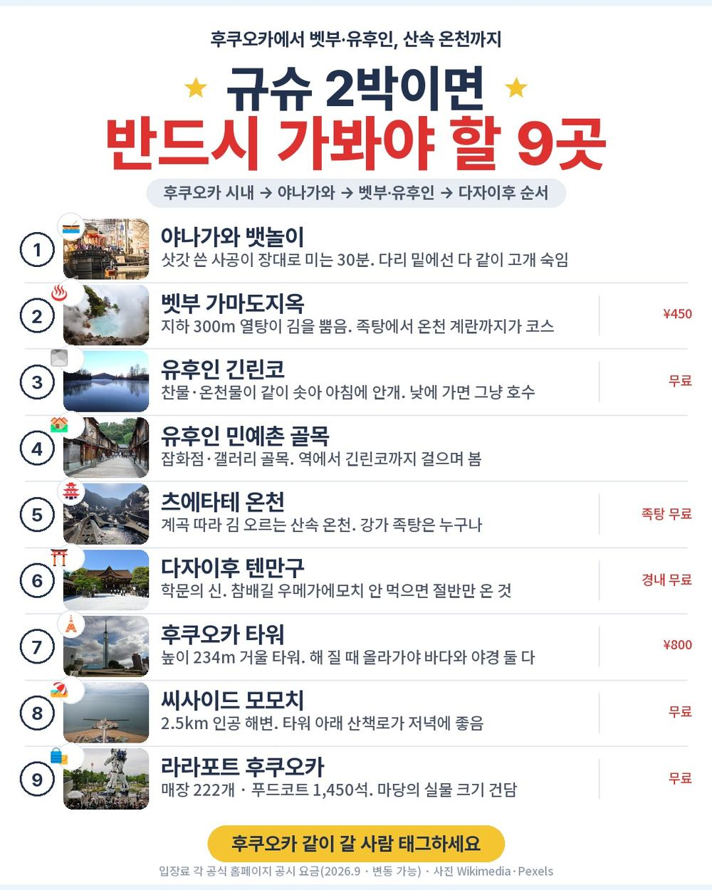
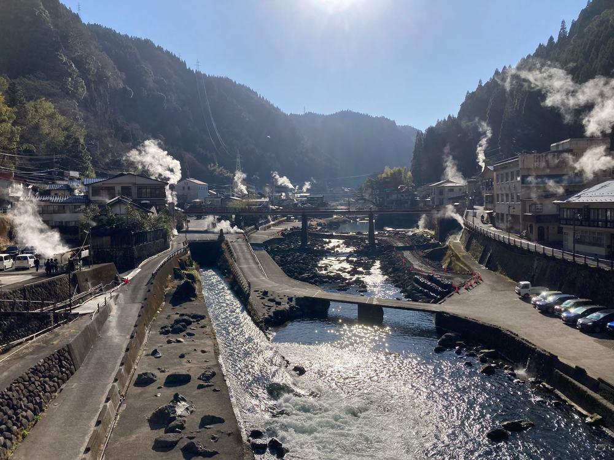
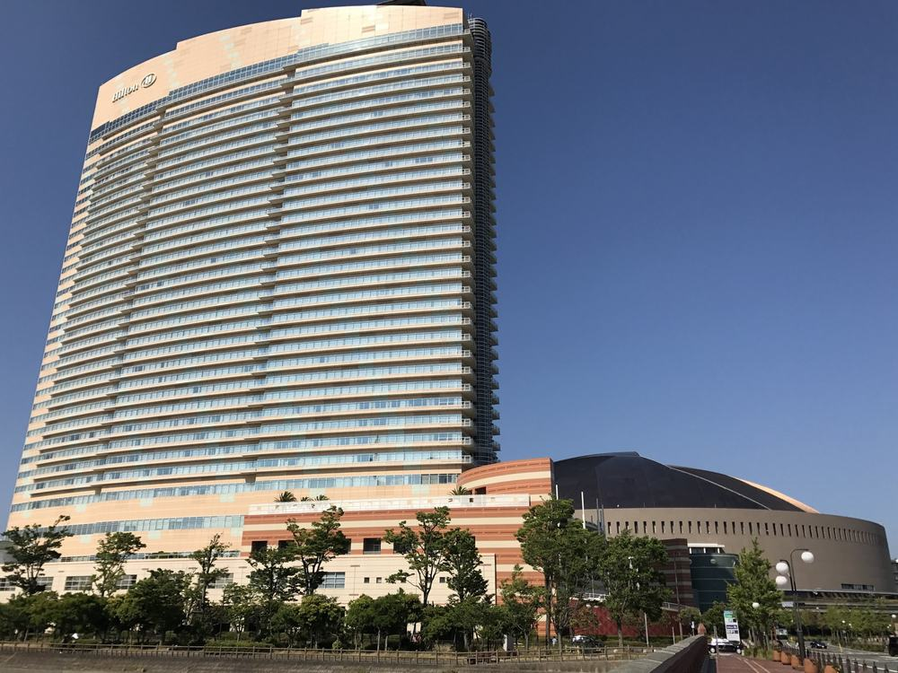
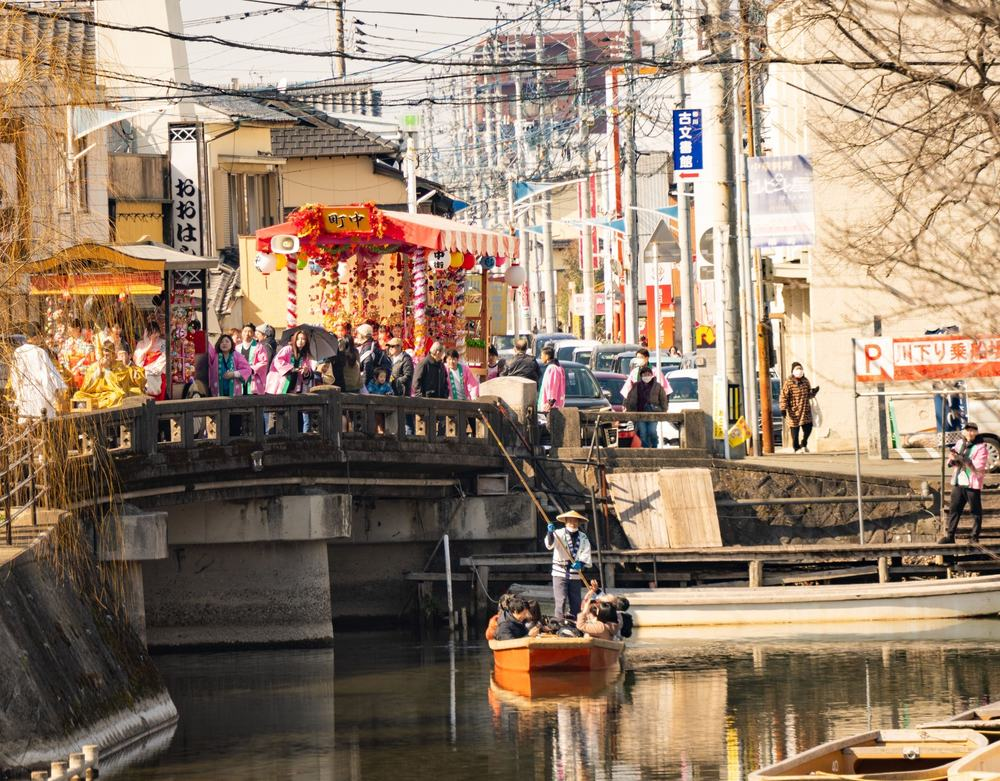
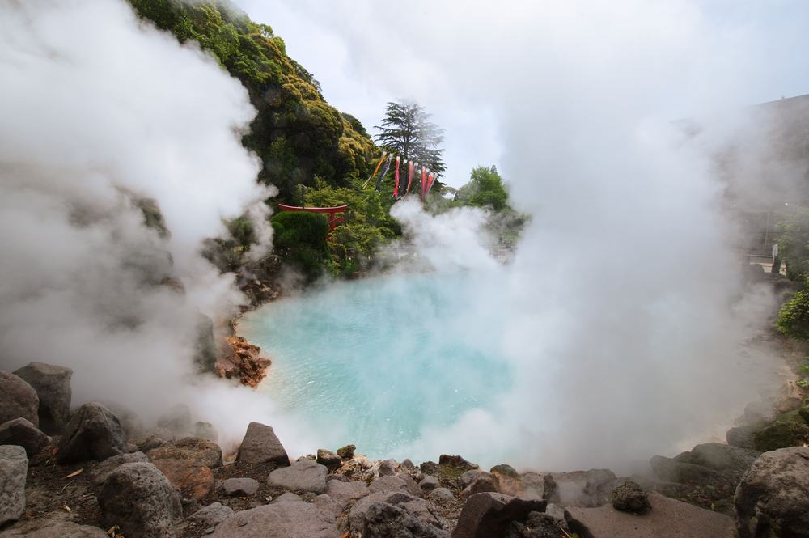
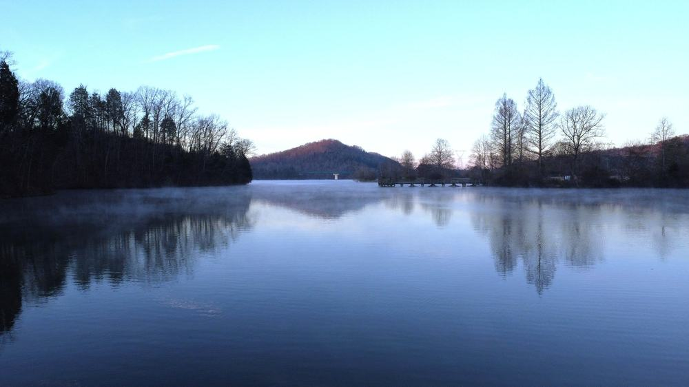

후쿠오카 패키지 가격 69만원, 힐튼 하루에 온천 료칸 하루가 되는 이유 (노랑풍선 · 제주항공 직항 · 2박 3일)
결론 — 추천. 온천 료칸에서 하루 자 보고 싶은 분, 2박 3일 짧게 걷기 부담 없이 다녀오실 분에게 맞음. 첫날 저녁을 알아서 사 먹는 게 싫은 분, 버스 4시간 반이 힘든 분은 고르면 안 됨.
부모님 가을 온천 여행을 알아보다가 힐튼 하루와 료칸 하루를 한 상품에 넣어 둔 게 보여서 붙잡았음. 보통은 특급호텔 2박이거나 온천호텔 2박인데, 이건 첫날은 후쿠오카 바닷가 힐튼, 둘째 날은 구마모토 산속 츠에타테 온천 료칸임. 69만 9천원이 어디까지 커버하는지 항목별로 뜯어봤음.

| 항목 | 내용 |
|---|---|
| 여행사 | 노랑풍선 |
| 가격 | 699,000원 (1인 · 성인 기준 · 10월 말 출발) |
| 일정 | 2박 3일 · 오후 3시 20분 출발 |
| 항공 | 제주항공 직항 (인천-후쿠오카 1시간 30분 · 기내식 없음) |
| 숙소 | 힐튼 후쿠오카 시호크 1박 + 츠에타테 온천 히젠야 료칸 1박 |
| 가는 곳 | 라라포트 · 모모치 해변 · 야나가와 뱃놀이 · 벳부 가마도지옥 · 유후인 긴린코·민예촌 · 다자이후 텐만구 |
| 반드시 더 내는 돈 | 가이드·기사 경비 3,000엔 (현지 지불) |
결론부터 말하면 같은 동선을 직접 짜면 20만원 넘게 더 듦. 료칸 1박 저녁·아침 포함 값이 크고, 야나가와-벳부-유후인-츠에타테를 하루에 잇는 건 자유여행으로는 렌터카 아니면 안 됨.
| 순서 | 다루는 것 | 한 줄 결론 |
|---|---|---|
| 1 | 구성 뜯어보기 | 식사 5회 중 특식 3회 · 선택관광 0 · 현지 필수는 3,000엔 하나 |
| 2 | 일정 살펴보기 | 첫날은 저녁만, 둘째 날 4곳, 셋째 날 다자이후 |
| 3 | 자유여행 VS 패키지 | 직접 짜면 96만원, 패키지는 경비까지 75만 5천원 |
1. 구성 뜯어보기
요약 — 항공·힐튼 1박·료칸 1박·식사 5회(특식 3회)·관광지 입장·가이드·보험까지 69만 9천원. 현지에서 반드시 내는 건 가이드·기사 경비 3,000엔 하나. 다만 1일차 저녁이 자유식이고 쇼핑이 1회 있음.
1-1. 값에 뭐가 들었나
1인 69만 9천원임. 2박 3일 기준임.
| 항목 | 상태 |
|---|---|
| 왕복 항공권 | 포함 (제주항공 직항 · 세금·유류할증 포함) |
| 힐튼 후쿠오카 시호크 1박 | 포함 (트윈 · 2인 1실 · 조식) |
| 히젠야 료칸 1박 | 포함 (화실 또는 화양실 · 석식·조식 · 온천 11지류) |
| 식사 5회 | 포함 (특식 3회 토리텐나베·료칸 석식·카마메시) |
| 1일차 저녁 | 자유식 (라라포트 푸드코트 · 본인 부담) |
| 관광 | 야나가와 뱃놀이 · 가마도지옥 족욕 · 긴린코·민예촌 · 다자이후 입장 포함 |
| 한국어 가이드 · 전용 버스 | 포함 (가이드가 인천에서부터 동행) |
| 여행자보험 | 포함 |
| 가이드·기사 경비 3,000엔 | 불포함 (현지 지불 · 성인·소아 동일) |
| 인솔자 | 불포함 항목 (일본은 가이드가 인솔자 역할을 겸함) |
| 쇼핑 | 1회 (면세점 잡화 · 약 40분 · 환불 불가) |
| 선택관광 | 없음 |
일본 패키지는 가이드·기사 경비를 현지에서 걷는 게 보통이고 이 상품도 그럼. 3,000엔이면 우리 돈 2만 8천원 안팎임. 상품가에 이걸 더해서 1인 72만 7천원으로 보면 됨.
| 항목 | 금액 | 비고 |
|---|---|---|
| 가이드·기사 경비 | 3,000엔 (약 2만 8천원) | 필수 · 현지 지불 |
| 1일차 저녁 자유식 | 약 1만 5천원 | 라라포트 푸드코트 기준 |
| 료칸 가족탕 | 유료 (현지 확인) | 안 쓰면 0 · 일반 탕은 무제한 |
| 음료·주류 | 끼니당 1천~3천원 | 식사에 나오는 음료 외 |
| 합계 (필수만) | 약 2만 8천원 | 첫날 저녁까지 약 4만 3천원 |

1-2. 힐튼 하루, 료칸 하루
첫 밤은 힐튼 후쿠오카 시호크임. 하카타만 바닷가 35층 호텔이고 옆이 야구장 돔, 모모치 해변이 걸어서 감. 트윈 2인 1실에 조식 포함.
둘째 밤이 이 상품의 핵심임. 구마모토 산속 츠에타테 온천의 히젠야 료칸. 온천 지류가 11개 흐르고, 깃쇼노유는 1회 무료 이용권, 나머지 탕은 무제한이라고 상품에 적혀 있음. 방은 다다미 화실 또는 침대 화양실 배정임. 저녁이 료칸 특식, 아침도 료칸 조식.
어디서 확인하나 — 상품명과 「숙박」 칸에 호텔 이름이 둘 다 적혀 있는지 봄. 이 상품은 '힐튼 후쿠오카 시호크'와 '츠에타테 온센 호텔 히젠야'가 적혀 있음. 다만 「포함사항」에 '숙박시설은 동급으로 변경될 수 있음' 문구도 있으니 예약 전화에서 한 번 확인함.

1-3. 식사 다섯 끼 중 세 끼가 특식임
식사는 5회임. 2일차 힐튼 조식, 점심 특식 토리텐나베 정식(오이타 명물 닭튀김), 저녁 히젠야 료칸 석식. 3일차 료칸 조식, 점심 특식 카마메시(솥밥) 정식 또는 일정식. 1일차 저녁만 자유식임 — 오후 3시 20분 비행기라 도착하면 저녁이고, 라라포트 푸드코트에서 알아서 먹음.
어디서 확인하나 — 일정표 각 날 식사 칸에서 '자유식' 글자를 셈. 이 상품은 1일차 석식 한 곳임. '특식'이라고 적힌 끼니가 몇 개인지도 봄. 기내식은 제주항공이라 없음.

1-4. 선택관광이 없음, 쇼핑은 한 번
이 상품은 선택관광 항목이 아예 없음. 현지에서 "이거 하실 분"이라고 권하는 시간 자체가 없음. 쇼핑은 3일차 면세점 약 40분, 잡화, 구매 자유(환불 불가).
어디서 확인하나 — 상품 페이지 「선택관광」 칸이 비어 있는지 봄. 「쇼핑」 칸에서 횟수·시간·'환불' 표시를 봄.
출발일별 요금 확인하기
https://naver.me/F05fsb9f
| 질문 | 답 |
|---|---|
| Q. 쇼핑 없나요? | 1회 있음. 3일차 면세점 약 40분, 구매는 자유 |
| Q. 가이드 경비는 따로 내나요? | 냄. 1인 3,000엔을 현지에서 엔화로 지불함. 상품가 밖임 |
| Q. 출발확정인가요? | 아님. 최소 15명이 모여야 출발하고, 모자라면 다른 팀과 합쳐 진행될 수 있음. 예약 후 담당자 전화에서 확인 |
2. 일정 살펴보기
요약 — 1일차 오후 4시 50분 도착해서 라라포트·모모치, 힐튼. 2일차 야나가와 뱃놀이 → 벳부 가마도지옥 족욕 → 유후인 → 츠에타테 료칸. 3일차 다자이후 보고 오후 5시 50분 비행기. 버스는 사흘에 약 7시간임.
| 일차 | 가는 곳 | 식사 | 숙소 |
|---|---|---|---|
| DAY 1 | 인천 15:20 출발 → 후쿠오카 16:50 · 라라포트 · 모모치 해변 | 자유식 | 힐튼 후쿠오카 시호크 |
| DAY 2 | 야나가와 뱃놀이 · 벳부 가마도지옥·족욕 · 유후인 긴린코·민예촌 | 조식 · 특식(토리텐나베) · 특식(료칸) | 츠에타테 히젠야 료칸 |
| DAY 3 | 다자이후 텐만구 · 면세점 · 후쿠오카 17:50 출발 → 인천 19:30 | 조식 · 특식(카마메시) | — |

2-1. 첫날은 저녁만 있음
오후 3시 20분에 인천에서 떠서 4시 50분에 내림. 공항이 시내에 붙어 있어 15분이면 라라포트임. 규슈 최대 쇼핑몰이고 마당에 실물 크기 건담이 서 있음. 여기서 저녁 자유식, 푸드코트가 1,450석임. 모모치 해변 잠깐 보고 힐튼으로 감.
첫날이 짧은 대신 아침에 서두를 일이 없음. 오후 1시에 공항 미팅임.
2-2. 둘째 날이 이 상품의 핵심임
야나가와(1시간 30분) → 벳부(1시간 30분) → 유후인(30분) → 츠에타테(약 1시간). 네 곳을 하루에 돌고 버스는 약 4시간 30분임.
야나가와는 옛 성터 둘레 수로를 나무배로 30분 도는 곳임. 삿갓 쓴 사공이 장대로 밀고, 낮은 다리 밑에선 다 같이 고개를 숙임. 앉아만 있으면 되는 관광임. 벳부 가마도지옥은 지하 300m에서 끓는 온천이 김을 뿜는 곳이고, 족탕에 발 담그면 온천 계란과 라무네를 줌. 유후인은 긴린코 호수 한 바퀴(10분)와 민예촌 골목 산책임.
어디서 확인하나 — 일정표 2일차에 '뱃놀이(약 30분)'이 적혀 있는지 봄. '야나가와 관광'만 적힌 상품은 배를 안 타는 경우가 있음. '가마도지옥 관광 및 족욕체험'처럼 족욕까지 적혀 있는지도 봄.

| 일차 | 구간 | 시간 |
|---|---|---|
| DAY 1 | 공항 → 라라포트 → 힐튼 | 약 30분 |
| DAY 2 | 힐튼 → 야나가와 → 벳부 → 유후인 → 츠에타테 | 약 4시간 30분 |
| DAY 3 | 츠에타테 → 다자이후 → 공항 | 약 2시간 |
| 합계 | 약 7시간 |
2-3. 료칸에서 아침 먹고 다자이후
3일차는 츠에타테에서 다자이후까지 1시간임. 학문의 신을 모시는 신사라 수험생 부모들이 많이 오고, 참배길에서 우메가에모치(구운 찹쌀떡)를 팖. 면세점 40분 들르고 점심 카마메시 정식 먹고 공항. 오후 5시 50분 출발, 인천 7시 30분 도착임.

| 질문 | 답 |
|---|---|
| Q. 많이 걷나요? | 거의 안 걸음. 뱃놀이는 앉아서, 나머지는 평지 산책 수준 |
| Q. 10월 말에 춥나요? | 낮 18~22도. 츠에타테는 산속이라 밤에 10도 안팎, 겉옷이 필요함 |
| Q. 온천에 수영복 되나요? | 안 됨. 상품 안내에 '남녀 구분, 수영복 착용 불가'라고 적혀 있음 |
3. 자유여행 VS 패키지
요약 — 같은 동선을 직접 짜면 1인 96만원쯤 나오고, 패키지는 가이드 경비와 첫날 저녁을 더해 75만 5천원임. 패키지가 20만원쯤 쌈. 료칸 1박(석식·조식)이 자유여행으로는 25만원 넘게 들고, 야나가와-벳부-유후인-츠에타테는 렌터카 없이 하루에 못 잇기 때문임.
같은 동선을 직접 짜면 얼마인지 계산해봤음. 패키지에 들어 있는데 자유여행이면 따로 내야 하는 돈까지 전부 넣었음. 환율은 100엔 = 930원으로 잡았음. 대부분 추정치라 근거 열에 적어 뒀음.
| 항목 | 자유여행 | 패키지 | 근거 |
|---|---|---|---|
| 왕복 항공 | 약 25만원 | 포함 | 인천-후쿠오카 LCC 10월 말 왕복 20~30만원대 (항공권 비교 사이트 월별 조회 · 추정) |
| 힐튼 시호크 1박 | 약 13만원 | 포함 | 트윈 1박 26만원 안팎 ÷ 2 (추정) |
| 료칸 1박 (석식·조식) | 약 26만원 | 포함 | 온천 료칸 1박 2식 2인 1실 1인 25,000~30,000엔 (추정) |
| 식사 3끼 | 약 6만원 | 포함 | 토리텐나베·카마메시 특식 + 힐튼 조식 (추정) |
| 도시 간 교통 | 약 12만원 | 포함 | 후쿠오카-야나가와 열차 · 벳부·유후인 고속버스 · 츠에타테는 버스가 드물어 택시 포함 (추정) |
| 입장료 | 약 3만원 | 포함 | 야나가와 뱃놀이 + 가마도지옥 ¥450 (추정) |
| 공항 ↔ 시내 | 약 5천원 | 포함 | 후쿠오카 공항 지하철 왕복 |
| 여행자보험 | 약 1만원 | 포함 | 2박 3일 기준 |
| 가이드·인솔자 | 없음 | 한국어 가이드 (경비 3,000엔 현지) | 양쪽 다 3,000엔 기준으로 봄 |
| 합계 | 약 96만원 | 69만 9천원 + 가이드 경비 2만 8천원 + 첫날 저녁 1만 5천원 = 약 75만 5천원 | 쇼핑 제외 |
숫자만 보면 패키지가 20만원쯤 쌈. 료칸 1박 2식이 자유여행으로는 제일 큰 항목이고, 그걸 상품가 안에 넣은 것임.
그리고 표에 못 넣은 게 있음. 야나가와-벳부-유후인-츠에타테를 하루에 잇는 건 대중교통으로 안 됨. 츠에타테 온천은 산속이라 버스가 하루 몇 편이고, 렌터카를 빌리면 그날 저녁 료칸에서 술을 못 마심. 버스 한 대가 사흘 동안 다 이어 주는 게 이 상품의 값어치임.

어디서 확인하나 — 자유여행으로 갈 거면 츠에타테 온천행 버스 시간표를 먼저 봄. 히타·구로카와 경유 노선이 하루 몇 편뿐임. 그게 안 맞으면 렌터카가 되고, 그러면 료칸 저녁 반주가 어려워짐.
| 자유여행이 맞는 사람 | 패키지가 맞는 사람 |
|---|---|
| 시내 호텔에서 밤거리를 걸을 것임 | 료칸에서 하루 자고 온천을 할 것임 |
| 렌터카 운전이 되고 반주는 안 함 | 이동은 맡기고 앉아만 있고 싶음 |
| 첫날부터 꽉 채우고 싶음 | 오후 출발이 편함 |
| 규슈를 두 번 이상 가봤음 | 부모님을 보내드림 |
| 질문 | 답 |
|---|---|
| Q. 환전은 얼마나 하나요? | 가이드 경비 3,000엔 + 첫날 저녁 + 개인 비용. 1인 1만엔이면 넉넉함 |
| Q. 혼자 가면 얼마 붙나요? | 싱글룸 사용료 25만원이 전 일정 기준으로 붙음 |
| Q. 비자 필요한가요? | 불필요. 여권 유효기간은 3개월 이상 |
4. 정리
69만 9천원에 제주항공 직항, 힐튼 1박, 온천 료칸 1박(석식·조식), 특식 3회, 야나가와 뱃놀이, 가마도지옥 족욕, 유후인, 다자이후까지 들어 있고 선택관광이 없음. 현지에서 반드시 내는 건 가이드·기사 경비 3,000엔 하나임.
같은 동선을 직접 짜면 96만원이 나와서 패키지가 20만원쯤 쌈. 값보다 더 큰 건 료칸이 있는 산속까지 버스 한 대가 이어 준다는 것임.
걸리는 건 첫날 저녁 자유식, 2일차 버스 4시간 반, 최소 15명, 오후 출발 이 넷임. 전부 상품 흠이 아니라 맞는 사람을 가르는 조건임. 첫날부터 꽉 채우고 싶으면 오전 출발 상품을 보면 되고, 료칸 온천 하루가 목적이면 이 구성이 맞음.
출발일별 요금 확인하기
https://naver.me/F05fsb9f
같은 기준으로 후쿠오카 온천 패키지 고르는 법만 따로 정리한 글도 있음 — https://blog.naver.com/robotnady10/224415886339
함께 보면 좋은 글
모두투어 타이베이 65만원, 부산 출발에 101 전망대까지 되는 이유
https://blog.naver.com/robotnady10/224415235888
노랑풍선 백두산 49만원, 천지 두 번에 광개토대왕비까지 되는 이유
https://blog.naver.com/robotnady10/224411110252
이 글에는 제휴 링크가 포함되어 있으며, 링크를 통해 예약 시 일정 수수료를 받습니다. 가격은 동일합니다. 이 글은 10월 말 출발 기준이며, 출발일에 따라 가격이 달라집니다.
▶ 이 상품, 영상으로 보기 (유튜브)
▶ 후쿠오카 패키지 오늘 값 나란히 비교
사진 출처: fk_tsuetate_onsen_1 — Openverse / fk_hilton_seahawk_1 — Wikimedia Commons / fk_kaiseki_dinner_1 — Pexels / fk_yanagawa_boat_1 — Pexels / fk_kamado_jigoku_1 — Pexels / fk_dazaifu_1 — Pexels / fk_kinrinko_1 — Pexels